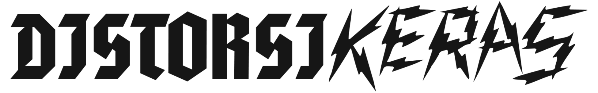

All Clients

DistorsiKERAS
DistorsiKERAS is the heaviest music event sub-brand of Rich Music Online, focused on Indonesia's loudest underground music events. ECA handled event visual design and on-site photography documentation for the 2024 festival.
Selected Work